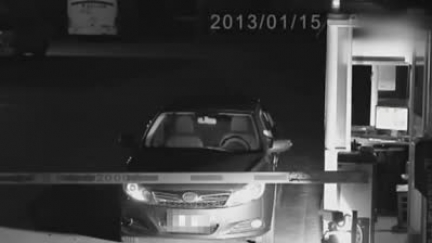
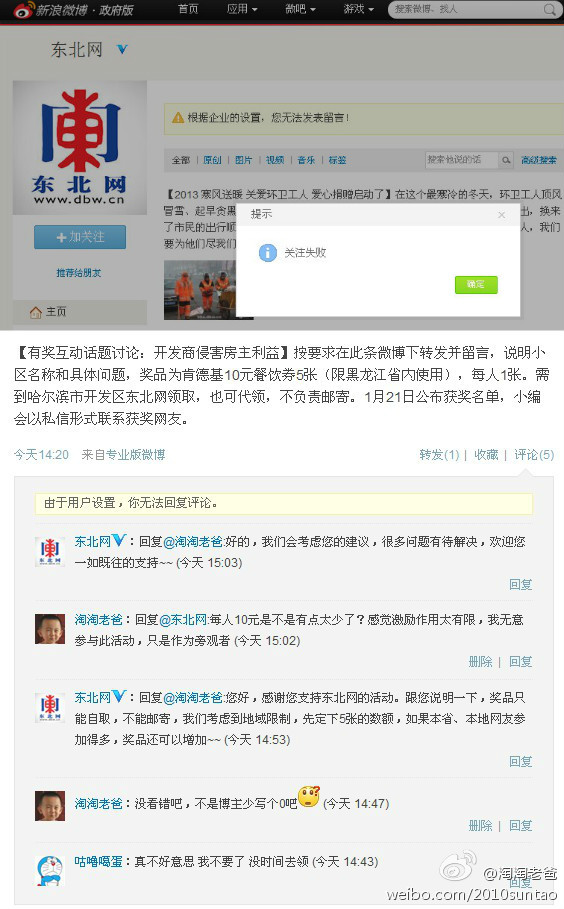

让BYD给利用了吧 你们。。哇哈哈哈@2327286642_691:【女子为逃费深夜扮鬼吓跑收费员】凌晨时分，一辆车开到收费处，收费员发现驾驶室空无一人，此时一名披头散发的女子缓缓爬上车顶，收费员吓得拔腿就跑。随后女子迅速从车顶下来，溜进岗亭收起横杆开走了车。据报道，有网友称事发在国内某景区停车场，因停车费太高才有了这出闹剧。视频：实拍女子为逃费深夜扮鬼爬车吓跑收费员  4万次播放 01:43
回复@淘淘老爸:我靠。。。打车去 来回就不只18那么简单。。。我x，莫不如颁发个虚拟的荣誉勋章，大家看着还乐呵乐呵。。我以为是50呢，。眼神儿不好使。。。@东北网 太过分了。。真的。。真的。。。@淘淘老爸:@东北网 您的肚量太有限了吧？“我们先期看一下网友的反映”也就是我反映了下，关心此活动，提了点自已的意见，“好的，我们会考虑您的建议，很多问题有待解决，欢迎您一如既往的支持 (今天 15:03)” 目前删除我的评论同时把俺列入黑名单， 看了下您发的活动留言，除了我别无他人留言啊 
难道不是吗？？@YouTube热门:今天和闺蜜一起洗澡，看到她肚子上的伤疤（剖腹产留下的），就问她:“ 这么小的口子怎么可能把宝宝生出来啊？ ” 闺蜜:“你是不是以为剖腹产就是把宝宝从肚皮上来的口里直接拿出来的啊？” 我满脸黑线:“难道不是吗？” 「转」
@淘淘老爸 哇哈哈哈～一朝忽觉京梦醒,半世浮沉雨打萍@a_2484951175:【衣俊卿因生活作风问题被免去中央编译局局长职务】据有关部门证实，中央编译局主要负责人衣俊卿因为生活作风问题，不适合继续在现岗位工作，已免去其中央编译局局长职务，贾高建担任中央编译局局长。详情：网页链接
 视频：实拍女子为逃费深夜扮鬼爬车吓跑收费员
视频：实拍女子为逃费深夜扮鬼爬车吓跑收费员